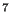
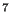
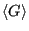
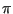
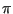
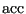
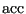

The Metropolis Monte Carlo Method
Monte Carlo is a type of numerical integration. Consider the following integral:
Now imagine that we have a second function,  , which is positive in the interval . We can also express as
, which is positive in the interval . We can also express as
If we think of
as a probability density, then what we have just expressed is the expectation value of the quantity on  in the interval :
in the interval :
This implies that we can approximate by picking  values
randomly out of the probability distribution and computing the following sum:
values
randomly out of the probability distribution and computing the following sum:
Note that this approximates the mean of as long as we pick a large enough number of random numbers ( is large enough) such that we “densely” cover the interval . If
is uniform on ,
and therefore,
The next question is, how good an approximation is this, compared with other one-dimensional numerical integration techniques, such as Simpson's rule and quadrature? A better phrasing of this question is, how expensive is this technique for a given level of accuracy, compared to traditional techniques? Consider this means to compute  :
:
Allen and Tildesley [2] mention that, in order use Eq. 67 to compute to an accuracy of one part in 10 requires = 10 random values of , whereas Simpson's rule requires three orders of magnitude fewer points to discretize the interval to obtain an accuracy of one part in 10 (Fig. 2). So the answer is, integral estimation using Monte Carlo estimation with uniform random variates is expensive.
requires = 10 random values of , whereas Simpson's rule requires three orders of magnitude fewer points to discretize the interval to obtain an accuracy of one part in 10 (Fig. 2). So the answer is, integral estimation using Monte Carlo estimation with uniform random variates is expensive.
Figure 2:
Integration of Eq. 68 by Monte Carlo and Simpson's rule. Upper: 4 vs number of random points for MC, for which points are uniform random variates on [0,1], and for Simpson's rule, for which points are equally spaced along [0,1]. Lower: Squared error in the estimate of for each method.
|
|
But, the situation changes radically when the dimensionality of the integral is large, as is the case for an ensemble average. For example, for a system of 100 particles comprising 300 coordinates, the configurational average
 (Eq. 59) could be discretized using Simpson's rule. If we did that, requesting only a modest 10 discrete points per axis in configurational space, we would need to evaluate the integrand
10 times. This is an almost unimaginably large number. Using a direct numerical technique to compute statistical mechanical averages is simply out of the question.
We therefore return to the idea of evaluating the integrand at a discrete set of points selected randomly from a distribution. Here we call upon the idea of importance sampling. Let us try to use whatever we know ahead of time about the integrand in picking our random distribution, , such that we minimize the number of points (i.e., the expense) necessary to give an estimate of
to a given level of accuracy.
Now, clearly the states that contribute the most to the integrals we wish to evaluate by configurational averaging are those states with large Boltzmann factors; that is, those states for which
is large. It stands to reason that if we randomly select points from
, we will do a pretty good job approximating the integral. So what we end up computing is the “average of
over
”:
which should give an excellent approximation for
. The idea of using
as the sampling distribution is due to Metropolis et al. [3]. This makes the real work in computing
generating states that randomly sample
.
Metropolis et al. [3] showed that an efficient way to do this involves generating a Markov chain of states which is constructed such that its limiting distribution is
. A Markov chain is just a sequence of trials, where (i) each trial outcome is a member of a finite set and (ii) every trial outcome depends only on the outcome that immediately precedes it. By “limiting distribution,” we mean that the trial acceptance probabilities are tuned such that the probability of observing the Markov chain atop a particular state is defined by some equilibrium probability distribution, . For the following discussion, it will be convenient to denote a particular state  using , instead of
using , instead of  .
.
A trial is some perturbation (usually small) of the coordinates specifying a state. For example, in an Ising system, this might mean flipping a randomly selected spin. In a system of particles in continuous space, it might mean displacing a randomly selected particle by a small amount  in a randomly chosen direction
. There can be a large variety of such “trial moves” for any particular system.
in a randomly chosen direction
. There can be a large variety of such “trial moves” for any particular system.
The probability that a trial move results in a successful transition from state to  is denoted and  is called the “transition matrix.” It must be specified ahead of time to execute a traditional Markov chain. Since the probability that a trial results in a successful transition to any state, the rows of add to unity:
is denoted and  is called the “transition matrix.” It must be specified ahead of time to execute a traditional Markov chain. Since the probability that a trial results in a successful transition to any state, the rows of add to unity:
With this specification, we term a “stochastic” matrix.
Furthermore, for an equilibrium ensemble of states in state space, we
require that transitions from state to state do not alter state
weights as determined by the limiting distribution. So the weight of
state :
must be the result of transitions from all other states to state :
For all states , we can write Eq. 72 as a post-op matrix equation:
where  is the row vector of all state weights. Eq. 73 constrains our choice of . This means there is still more than one way to specify . Metropolis et al. [3] suggested:
is the row vector of all state weights. Eq. 73 constrains our choice of . This means there is still more than one way to specify . Metropolis et al. [3] suggested:
That is, the probability of transitioning from state to is exactly equal to the probability of transitioning from state to . This is called the “detailed balance” condition, and it guarantees that the state weights remain static. Observe:
Detailed balance is, however, overly restrictive; is the only the conceptually simplest way to guarantee that a limiting distribution is obtained. This fact is of little importance in this course, but you may encounter other balance-enforcing conditions in the literature.
Metropolis et al. [3] chose to construct as
where  is the probability that a trial move is attempted, and  is the probability that a move is accepted. If the probability of proposing a move from to is equal to that of proposing a move from to , then
, and the detailed balance condition is written:
is the probability that a trial move is attempted, and  is the probability that a move is accepted. If the probability of proposing a move from to is equal to that of proposing a move from to , then
, and the detailed balance condition is written:
from which follows
giving
![$\displaystyle \frac{{\rm acc}\left(n\rightarrow m\right)}{{\rm acc}\left(m\righ...
...eft(\Gamma_n\right)\right]\right\} \equiv \exp\left(-\beta\Delta{U}_{nm}\right)$](img247.png) |
(79) |
where we have defined the change in potential energy as
There are many choices for
that satisfy Eq. 79. The original choice of Metropolis is used most frequently:
So, suppose we have some initial configuration with potential energy . We make a trial move, temporarily generating a new configuration . Now we calculate a new energy, . If this energy is lower than the original, () we unconditionally accept the move, and configuration becomes the current configuration. If it is greater than the original, () we accept it with a probability consistent with the fact that the states both belong to a canonical ensemble. How does one in practice decide whether to accept the move? One first picks a uniform random variate  on the interval
on the interval ![$ [0,1]$](img256.png) . If
, the move is accepted.
. If
, the move is accepted.
The next section is devoted to an implementation of the Metropolis Monte Carlo method for a 2D Ising magnet.
cfa22@drexel.edu